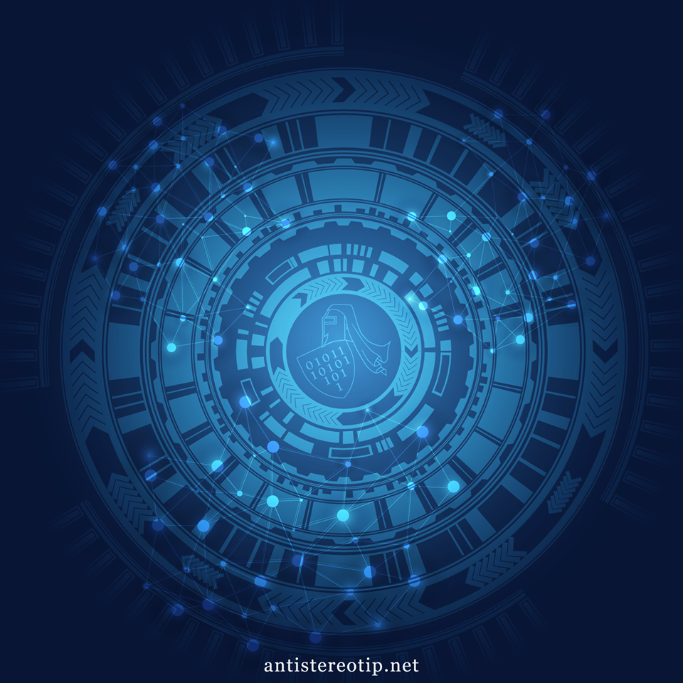

Početna strana - 0659511404 - milutingavrilovic@gmail.com
Nije znanje znanje znati, već je znanje znanje dati. J.J.Zmaj
Udruženje građana za besplatnu informatičku edukaciju i društveno odgovorne projekte Antistereotip (u daljem tekstu: Udruženje) je dobrovoljno, nevladino i neprofitabilno, nestranačko udruženje, osnovano na neodređeno vreme radi ostvarivanja ciljeva u oblasti besplatne informatičke edukacije socijalno ugrožene omladine i dece, sprovođenja društveno odgovornih projekata, rada sa marginalizovanim grupama stanovništva i pomoći zavisnicima, kao i žrtvama trafiking-a.
Na šta smo spremni ukoliko se vizija ostvari?
Uskrs, ćerka Antistereotip fondacije?